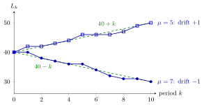

Queue Drift¶
Definition¶
Consider the discrete-time queue recursion with arrivals and capacities per period, and write
the same for every period. The drift of the queue is , the expected change of the queue length per period while the queue is long enough for the full capacity to be used. Indeed, whenever (service in the arrival period) or (no service in the arrival period), the recursion reduces to
If is independent of the past and the capacities are bounded, , then for every . The queue has positive drift if and negative drift if .
Interpretation¶
Far from zero a queue moves like a random walk whose step in each period is arrivals minus capacity. The drift is the mean step: its sign says whether a long queue will grow or drain, and its size says how fast.

The figure plots Example 1, a short version of Fig. 2.3.1 in the notes. Both paths start at and use the same ten arrival counts, with mean . With the drift is and the path ends at ; with the drift is and it ends at . The dashed lines and are what the drift alone predicts.
The identity only holds away from the boundary. Near zero the server cannot serve jobs that are not there, so the queue is pushed up, and a queue with negative drift does not reach a negative length but keeps fluctuating near the origin. Negative drift means , which is the load condition of (2.1.9). The case is not enough: the notes point out that stochastic queues with zero drift are not stable.
Drift sets the direction, not the size of the queue. With the same negative drift a queue can be long if capacity comes in lumps, which is why Section 2.3 next introduces the squared coefficient of variation. With i.i.d. steps, linearity of expectation and the law of large numbers explain why a queue with positive drift grows roughly like . In Week 3 this idea returns as rate stability.
Key Results¶
- Away from the boundary the increment is exactly ; on average the queue changes by per period.
- Under both timing conventions , hence ; with i.i.d. steps and the queue grows at least linearly.
- : unstable, the queue grows by about per period. : a long queue drains by about per period and then stays near zero. : not stable for stochastic queues (Solution 2.3.1).
- The sign of the drift matches the load estimate compared with .
- A small negative drift gives long and variable queues, and so does variable capacity at the same drift (Examples 3 and 4).
Examples¶
1. Draining and growing. Let and , with sum . With every step is and the path is after periods to ; with it is . After ten periods the queues are and , exactly the drift prediction because the arrivals happen to average .
2. Positive drift, quantified. Take and independent, and no service in the arrival period (TF 2.3.3). The drift is . Since with and , the Chebyshev inequality gives
So the claim is false; the queue holds about jobs.
3. Small margins. In the notes, arrivals are uniform on () and with Bernoulli, , periods. With , and the drift is ; the simulated queue has sample mean and sample variance . With , and the drift is ; the sample mean rises to and the variance to . Both queues are stable, but cutting the excess capacity from to makes the queue about ten times longer on average.
4. Same drift, different queues. Let in every period and serve in the arrival period. With the queue stays at . With when is a multiple of and otherwise, the average capacity per period is still , so arrivals and capacity still balance on average, but the queue runs through and averages jobs.
Prerequisites¶
Related Concepts¶
- Squared Coefficient of Variation
- State-Dependent Capacity
- Server Load
- Rate Stability
- Chebyshev Inequality
- Strong Law of Large Numbers
- Tandem Queue
Sources¶
- Stochastic Operations Research · Week 2
- N. D. van Foreest, Sample Path Analysis and Simulation of Stochastic Systems, Section 2.3
Aliases: drift of a queue, queue-length drift, positive drift, negative drift Keywords: mean net input per period, \lambda - \mu, \lambda = E[a_k], \mu = E[c_k], stable queue, unstable queue, random walk, excess capacity, Fig. 2.3.1 Symbols: lambda, mu, rho, sum
Last updated: 29 October 2026 20:42
Queue DriftServer LoadService RateState-Dependent CapacityDiscrete-Time Queue RecursionExpectationLinearity of ExpectationSquared Coefficient of VariationRate StabilityChebyshev InequalityStrong Law of Large NumbersTandem Queue